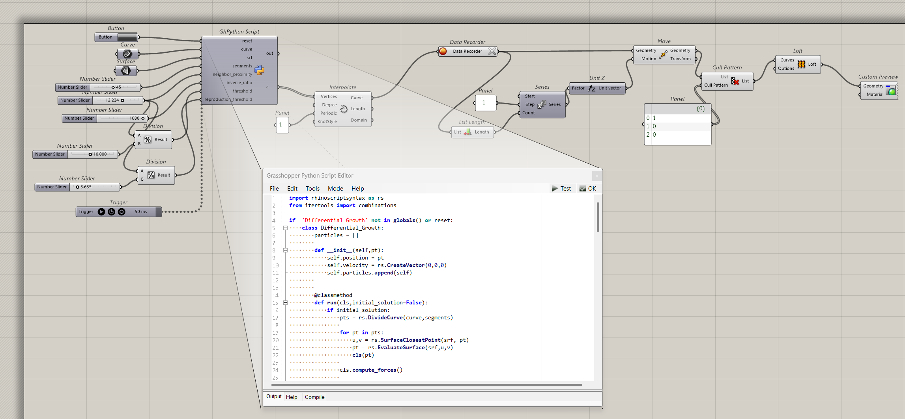
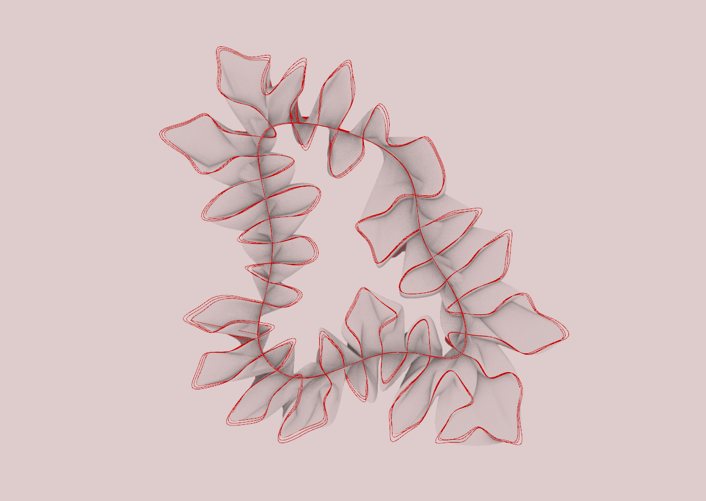
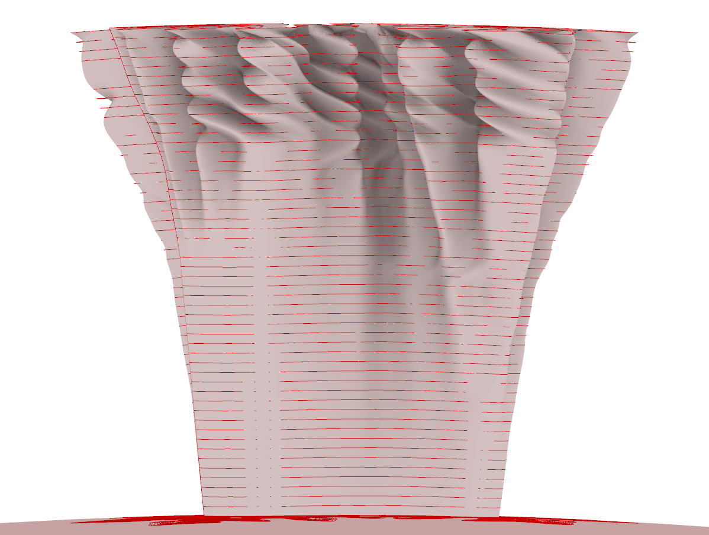
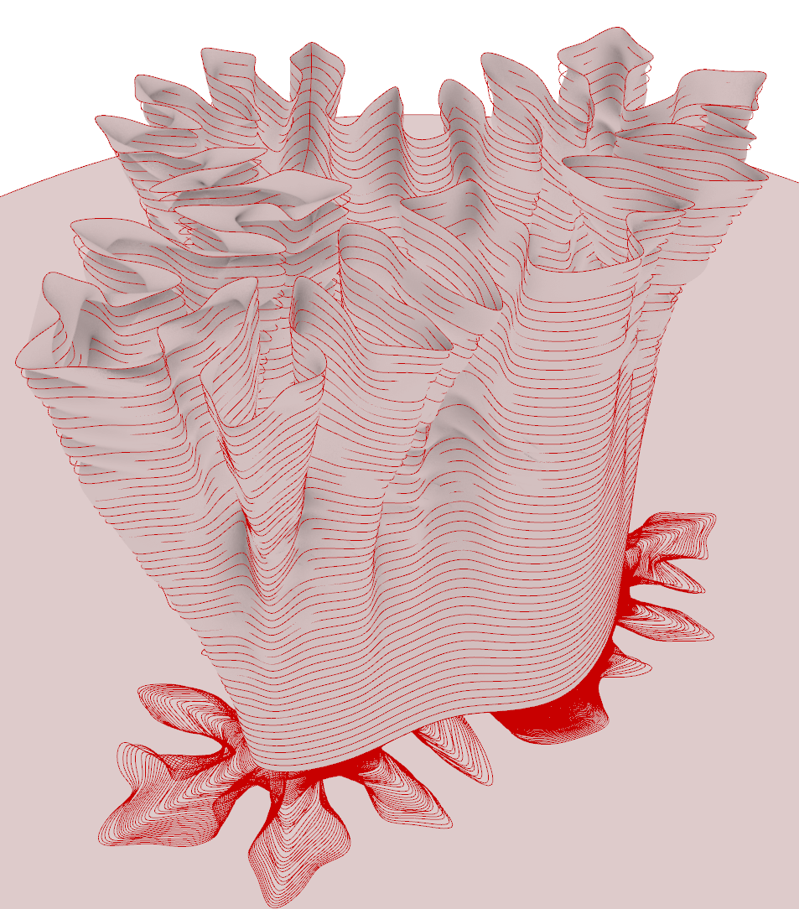
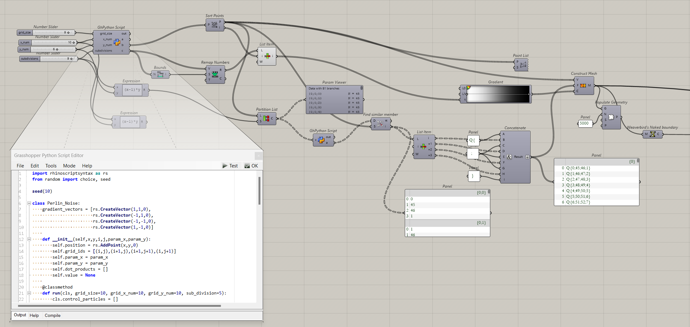
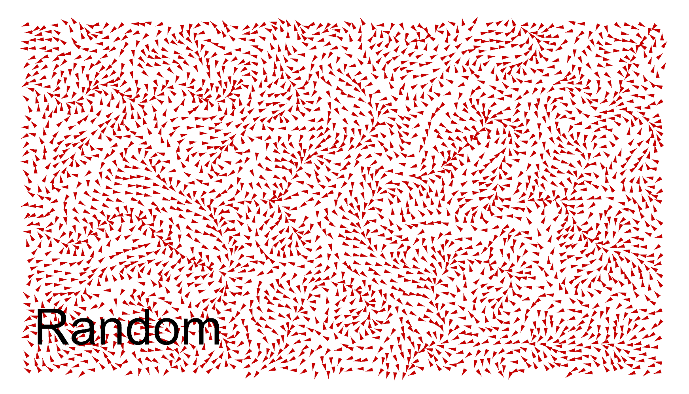
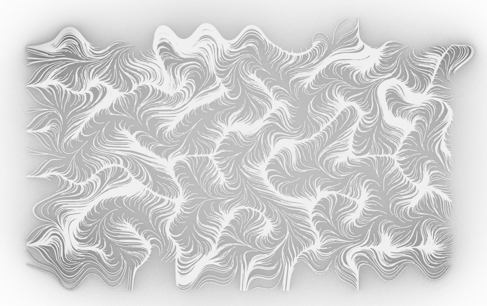
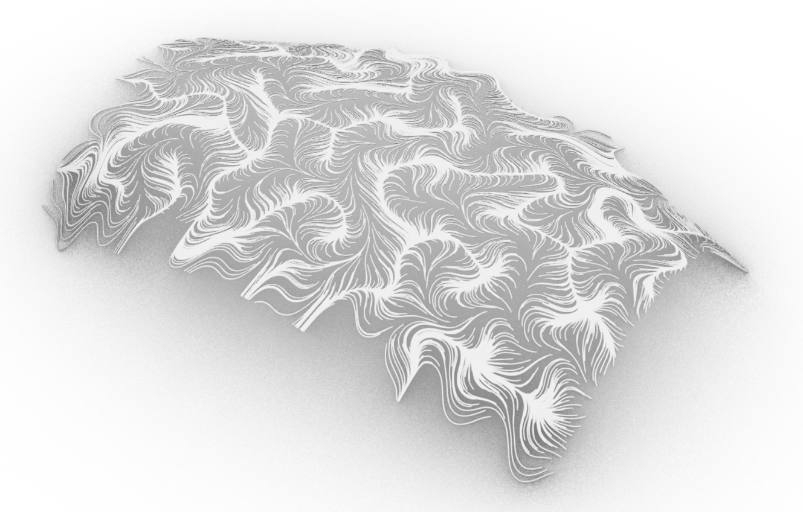
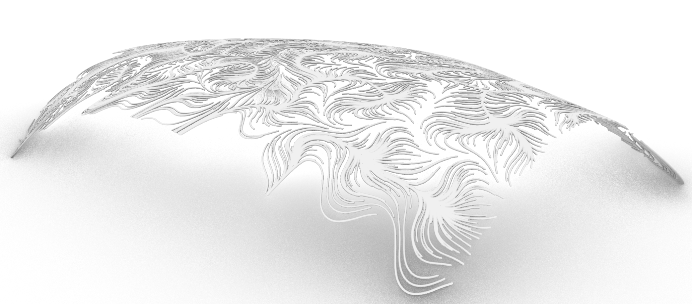

Swarm Intelligence
Working Duration: Sep 2023 - present
Cellular automata:
Swarm intelligence exemplifies my dedication to incorporating nature's wisdom into the creation of modern urban environments. My first project uses cellular automata to illustrate how ordered and purposeful behavior can emerge from mindless entities— the cells—interacting according to simple rules. Cellular automata are widely used to model various natural phenomena, from the patterns on animal coats to bacterial infections.
A one-dimensional cellular automaton consists of a row of cells, each containing a number. At regular intervals, the number in each cell changes according to a given rule, which usually depends on the numbers in the neighboring cells. I have extended this idea to two dimensions by starting with a two-dimensional grid of cells containing numbers as the first generation and then replacing the numbers in the cells according to specific rules.
A famous example of a two-dimensional cellular automaton is John Conway's Game of Life, which produces patterns that resemble living organisms. The Game of Life is played on an infinite two-dimensional grid of square cells. Every cell interacts with its eight neighbors, which are the cells that are horizontally, vertically, or diagonally adjacent. At each step in time, the following transitions occur: 1. Any live cell with fewer than two live neighbors dies (as if caused by underpopulation). 2. Any live cell with two or three live neighbors lives on to the next generation. 3. Any live cell with more than three live neighbors dies (as if by overpopulation). 4. Any dead cell with exactly three live neighbors becomes a live cell (as if by reproduction). The initial pattern constitutes the seed of the system. The first generation is created by applying the above rules simultaneously to every cell in the seed. As with one-dimensional cellular automata, the rules continue to be applied repeatedly to create further generations. Depending on the seed, very exotic patterns can emerge.


Differential Growth:
The aim of this project is to simulate differential growth. This process produces unique geometries and structures found in natural phenomena such as plants, biofilm formation, and flowers. It is also observable within ourselves, for instance, in our heart, brain, and fingerprints. To simulate differential growth, I started with an initial distribution of nodes and connecting edges.
New nodes are added by two mechanisms: adding points in regions with high curvature and adding points when edges are sufficiently large. Additionally, the nodes interact through attraction and repulsion forces. As a result of adding new nodes and the interaction forces, the system is observed to spatially morph, grow, and develop unique characteristics based on the parameters, forming a distinctive structure.




Perlin Noise:
The aim of my project is to simulate Perlin noise, a technique used to produce natural-looking textures and patterns. Perlin noise is a gradient noise function used in graphics to create textures resembling natural phenomena such as wood, fire, and clouds. To achieve this, I began with a grid where each point is assigned a gradient vector. These vectors influence how noise values are computed at various points in the space.

Think of the canvas as a two-dimensional force field. Each point on the canvas is assigned a direction in which its "force" redirects particles. By assigning random directions of force to every point on the canvas, the resulting patterns are dynamic and unpredictable. This technique captures the complexity and beauty of natural forms through controlled randomness and smooth transitions, illustrating the power of Perlin noise in generating organic and intricate designs.




More Projects are comming...